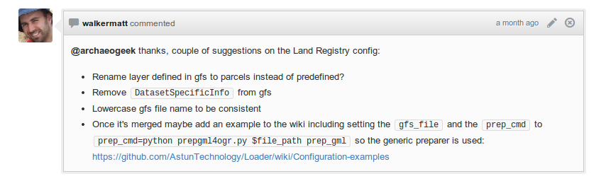
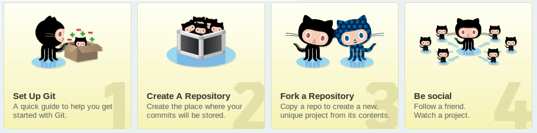

GitHub
A Beginners Guide for Geospatial Folk
Jo Cook, Astun Technology / @archaeogeek
Put away your paper, pens, pencils and other note-taking implements!
This talk is on GitHub, so by the end of it you should be able to view it online, and download your own copy
This is misleading
It's not just about building software
It's a community, a social network, a place for your CV or blog, and increasingly a data viewer/repository
But it is about version control as well
It's great for collaboration, disaster-recovery, and encourages good practice (be that writing code or prose)
Unfortunately it's intimidating for beginners
- It's a strange new language of forks, branches, heads, commits
- Usage is predominantly commandline-based
- Explanations and Tutorials get real deep, real quick...
- It's very public!

So how to get started?
- Try one of the courses from Code School
- Get the (free) book
- Start with the really nice desktop client (windows or mac)
- Create your own private local repositories to get used to the process
Git 101
Caveat- I only have 20 minutes so don't expect this to be exhaustive!
The beginning
Convert your folder into a repository
- Either CLONE (eg copy) an existing repository
- ... or INIT (eg create from scratch) a new repository
Tracking Files
Git will only track files that you ask it to
- ADD the files you want to track (and RM --cached the ones you don't)
- .GITIGNORE compiles a list of files or file types you never want to track
Making changes
Git keeps a history of all your changes
- STATUS tells you which files will be changed
- COMMIT the change and explain what you've done
- LOG tells you the history of the changes to the repository
Collaboration

So far we've just looked at a local repository with no other contributors, but when collaborating, or working with a remote repository such as GitHub things unfortunately get more complicated...
Working with remote or collaborative repositories
- A REMOTE is a link back to the original repository (that you cloned from)
- You can FETCH or PULL changes from the remote then MERGE them with your changes
- You can PUSH your changes to a remote repository
Forking
A FORK is a GitHub command for making a copy of an existing GitHub repository under your own account
- You can then CLONE your copy, and edit it locally
- You can to keep tracking the master repository, by adding it as a second remote
- You can PULL from either your fork, or the master, by referring to the name or URL of the remote
- You can only PUSH to your fork on GitHub
- If you have changes you wish to commit back to the master repository, you can issue a PULL REQUEST
Branching
A branch is a way of differentiating between different "versions" of code such as stable versions versus experimental
- You can CHECKOUT -b a new branch and then work on it separately
- From then on in, all commits work only on the specific branch until you explicitly MERGE two branches
- You can compare branches (and commits) with DIFF
- As a new user you'll probably only use branches by mistake, when your changes have created one on GitHub
Undoing changes
Git is a version-control system so of course you can roll-back commits and fix mistakes
- You can AMEND your last commit to add some new files to it
- You can RESET HEAD a file from staging (the HEAD is a pointer to the latest branch that you're on)
- You can REVERT to either the last commit or any commit in the branch history
Git Lesson Over...
Now the fun non-coding stuff

Finally some geospatial stuff!
Increasingly GIS packages are using GitHub for their source code, eg QGIS
Geopython is a useful collection of python libraries for geospatial tasks
Even ESRI are embracing GitHub
GitHub understands GeoJson and TopoJson
Which means you can upload any valid .json file (in EPSG 4326) and it will render automatically on an interactive openstreetmap map courtesy of leaflet.js
You can implement versioning of your geospatial data using git*
For example, try Geogit
*Caution, very beta
You can find loads of free reference material
You can see real-time commits
GitHub Wargames courtesy of geonames.org, node.js and socket.io
Non-spatial cool stuff
Host websites
Github can be used to host static html websites, and will even automatically render your html*
*Like this talk (see later for URL)
You can find presentation software that doesn't suck
"The most important social network"*
*Someone cool, influential, and very important said this but I can't remember who
Summary
- GitHub is about more than just coding
- There are plenty of resources for getting started
- There are a lot of geospatial and non-geospatial resources on there
- You might find your next employer/employee/client/colleague on there
- It might just make you a better person (well, writer or coder anyway)
Get your pen out again...
Find this talk on GitHub at:https://github.com/archaeogeek/aging_githubtalk/